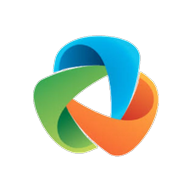

Rassurez-vous : ce n'est pas un Google Forms pour un mémoire IBODE. 😄
Vous avez déjà donné. On le sait.
Si vous êtes comme moi, il vous est peut-être déjà arrivé de rentrer aux vestiaires en vous disant que c'était l'une des pires journées de votre carrière.
Pas à cause d'un vrai problème. Pas une urgence. Juste… vous n'étiez pas préparée.
Ça devait être un mardi matin — je ne me souviens plus du jour exact, mais de ce que j'ai ressenti, oui. Parfaitement. Le programme affichait : "Petite intervention — DI3DT gche"
C'est tout. Voilà l'information.
J'ai fouillé dans le classeur poussiéreux du placard de notre salle de pause. J'ai fini par trouver une fiche manuscrite. Datée de 2014. On était en 2025.
En salle, le chirurgien a opéré comme si j'étais transparente. Il n'a pas ralenti d'une seconde. Il s'attendait à ce que je sache. J'étais complètement larguée — et lui ne l'ignorait pas.
Non seulement je m'en souviens encore, mais j'appréhende comme une folle de revivre ce calvaire.
J'avais pourtant presque 10 ans de bloc derrière moi ce jour-là.
Face à ça, on fait toutes pareil. On s'accroche aux transmissions orales des collègues. On recopie dans un carnet personnel. On fait tourner un fichier Word dans les vestiaires. On demande à "celle qui sait" — et on prie pour qu'elle soit là le jour où on en a besoin.
Malheureusement, ce savoir-là reste dans les têtes. Il part à la retraite avec les anciennes. Il disparaît quand une collègue change de service. Et les nouvelles — les étudiantes, les remplaçantes, les intérimaires — repartent toutes des mêmes cases départ.
On recommence à zéro à chaque fois.
Voilà en gros ce qu'on vit dans nos blocs depuis des années. Et si vous vous y reconnaissez un peu, ce que je m'apprête à vous dire va peut-être vous intéresser.
Depuis 2 ans, avec quelques collègues de Limoges, on construit quelque chose. Quelque chose qu'on aurait voulu avoir ce mardi matin-là. Laissez-moi vous raconter comment ça a commencé.
Diplômée en 2013, j'ai passé mes premières années à apprendre sur le tas, comme tout le monde. Un bloc ici, un remplacement là. Chaque secteur avait ses codes, ses chirurgiens, ses habitudes. Et à chaque fois : repartir de zéro.
Ce qui m'a le plus frappée avec les années, ce n'est pas la difficulté des actes. C'est la quantité de savoir invisible qui circule dans un bloc — et qui ne s'écrit nulle part.
L'idée est venue d'une discussion banale dans le vestiaire, après une journée chargée. On venait d'accueillir Maëlle — IBODE fraîchement diplômée, mais pas novice pour autant : 2 ans de formation, et 2 ans de bloc avant ça. Elle avait tout préparé, relu ses notes de cours, bossé son anatomie.
Et pourtant. Le premier mois, elle était perdue.
Un mois — pour quelqu'un de solide, avec du vécu, c'est déjà beaucoup trop. Pour une remplaçante qui débarque un lundi matin, pour une intérimaire envoyée là par une agence : elles ont parfois une journée. Au pire : une heure.
Le problème n'était pas elle. C'était ce savoir invisible — propre à chaque bloc, à chaque chirurgien, à chaque habitude non écrite — qui ne se transmettait qu'à voix basse, entre deux portes.
Ce soir-là, on s'est regardées, dépitées. Et dans un soupir collectif, une d'entre nous a lâché :
"On devrait quand même pouvoir faire quelque chose, non ?"
Pas question de réécrire la médecine. Juste… ne plus jamais tomber sur une fiche de 2014, raturée, griffonnée, cachée au fond d'un placard — et se demander si elle est encore valable.
Quelque chose de vivant. De terrain. Construit par des IBODE, pour des IBODE. Pas par un éditeur de logiciel qui n'a jamais mis les pieds dans un bloc opératoire. Enrichi au fil de l'eau — parce que de toute façon, ça ne pourrait pas être pire que ce qu'on avait déjà.
On a appelé ça Des Blocs & Moi.
Les premières collègues qui l'ont utilisé nous ont dit une chose simple : "J'aurais voulu avoir ça dès le premier jour."
Une remplaçante a préparé sa semaine chez nous sans jamais avoir mis les pieds dans notre bloc. Une jeune diplômée nous a dit qu'elle avait enfin eu l'impression de comprendre pourquoi on faisait les choses — pas juste comment.
Ça, ça nous a convaincues de continuer.
En construction active. C'est là que ton témoignage intervient.
Et toi, tu sais ce qui manque — même sans le savoir encore. On a les mains dans le cambouis. Tu as les réponses qu'on cherche.
5 questions, 3 minutes. Anonyme.
Chaque réponse est lue. Tu viens de participer à un brainstorming collectif entre IBODE — la seule façon qu'on a d'identifier ensemble ce qui manque encore.
Si tu penses à une collègue qui a vécu la même chose — partage-lui ce lien. Plus on est nombreuses, plus Des Blocs & Moi sera complet.